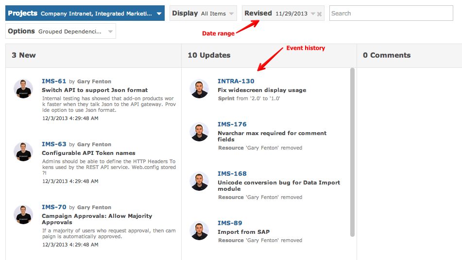

Timeline
The Timeline provides a historic view of what happened on any given project.

- New: items that were created during the timeline period
- Updates: items that changed during the timeline period
- Comments: all comments added during the timeline period